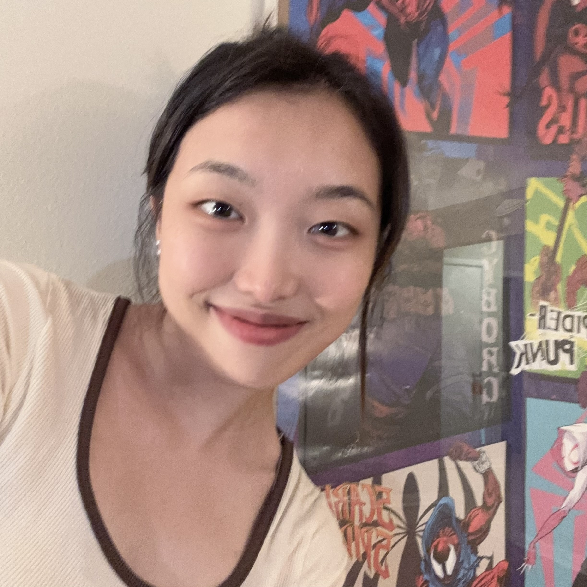

About Me
My name isYuyue Liu. My pronouns is she/her and I come from China.Something I'm passionate about is playing games. I like to play single player games like switch, ps4/5 and Xbox. My favorite game is Red Dead Redemption. It's really an excellent game. This is a story about a cowboy in the American West. Also, a story about how to balance destiny and self-selection. I'm sure everyone who plays it falls in love with it.
In the future I hope I can get into working for a gaming company. I think studying IMD will help me find the job of my desire. For example, I can learn something about UI/UX design and I can learn how to make a beautiful web page. In fact, I am interested in the thing of making web pages. I don't have any basic knowledge of writing code, but I think it's cool.
A list of my hobbies
- Play games
- Swimming
“One of the lessons that I grew up with was to always stay true to yourself and never let what somebody else says distract you from your goals.”--Michelle Obama